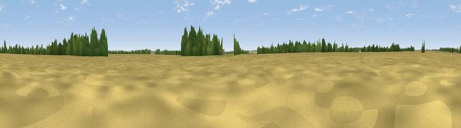

Viewpoint near Swinstead
#45208 in England · top 93% of its area beats it · near SwinsteadWhere it is
The exact computed spot (TF 01433 21833). Click the marker for map links.
The view, rendered

A 360° render of this exact spot computed from the terrain model, tree cover and land cover — summer colours, afternoon light, calibrated against photographs of famous viewpoints. Real trees, hedges and buildings will differ in detail.
The panorama
Grey silhouette: terrain skyline in each direction (720 bearings, Earth curvature and refraction included). Dashed green: skyline with trees (+15 m) and buildings (+8 m) as obstacles. Blue strip: how far the ground is visible on each bearing.
Where the view opens
Wedge length = distance to the farthest visible ground on that bearing (vegetation-aware). Rings at 10, 25 and 50 km.
What fills the view
79% cropland · 14% grassland · 7% woodland
Angular shares of the visible panorama (visual magnitude), not map area. Landscape diversity 0.28 (0–1 Shannon).
Key numbers
More beautiful places nearby
The staircase of upgrades: each row has a higher view potential than everything closer. Driving times are estimates from straight-line distance, calibrated against real road routing — check an actual route before setting out.
| Place | Direction | Drive | Score |
|---|---|---|---|
| Viewpoint near Creeton | SSE · 2 km | ~6 min | 25.3 |
| Viewpoint near Edenham | E · 5 km | ~12 min | 39.9 |
| Viewpoint near Toft | SE · 8 km | ~17 min | 49.0 |
| Viewpoint near Belton | NNW · 19 km | ~32 min | 51.0 |
| Viewpoint near Barrowby | NW · 20 km | ~34 min | 53.5 |
| Viewpoint near Great Gonerby | NW · 21 km | ~35 min | 59.8 |
| Viewpoint near Great Gonerby | NNW · 21 km | ~35 min | 62.0 |
| Viewpoint near Belvoir | WNW · 23 km | ~38 min | 70.8 |
52.78455, -0.49748 · source: osm peak · position refined by local search. Computed location — check access rights before visiting.